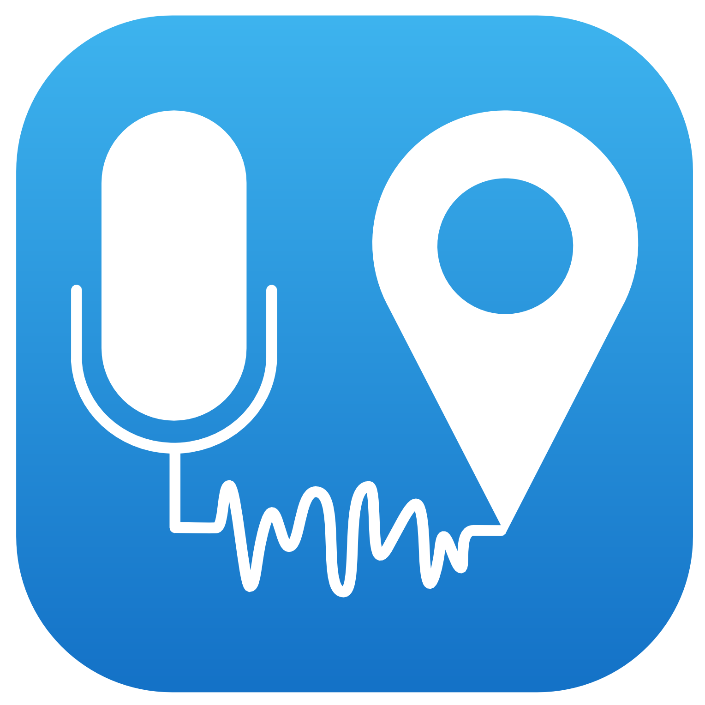
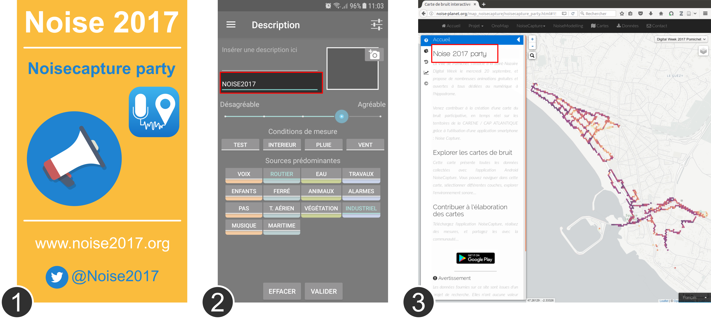
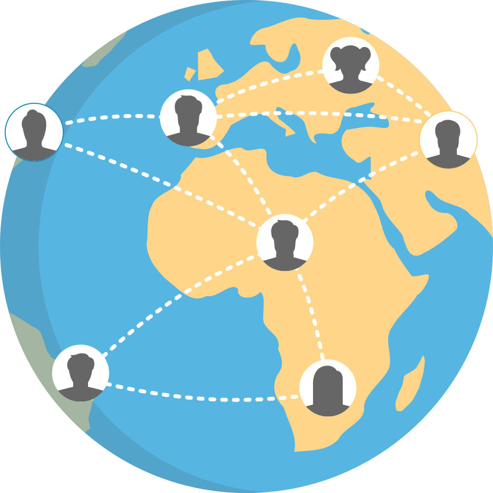
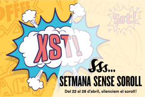

NoiseCapture Party
A NoiseCapture Party is an event, organized on a limited territory (a place, a neighborhood, a city, ...) and on a relatively short time (1 day, 1 week, ...), aimed at bringing together a large number of contributors simultaneously in order to feed a participatory noise map, or to test new functionalities of the application.
A NoiseCapture Party should, if possible, be supervised by one or more persons with a level of expertise to pass on good practice in acoustic measurement and in the interpretation of results.
Everybody is welcome to organize such an event. Nevertheless we are mainly focusing the following actors:
You are free to organize your own party. Nevertheless, if you want to have support from our side, feel free to contact us.
If your project of party catches our attention, we offer you the following elements:
In addition, if we are taking part to your party, we can:
Want to know more about the organization of NoiseCapture Party ? Donwload this TUTORIAL.
Below is presented a fictionnal example:

To conduct a party, you can follow the general guidelines (for both organizers and users) presented below, or consult the dedicated TUTORIAL.
Before the measuring step
After the measuring step
You would like to take part in the NoiseCapture initiative in a more important way?
We are looking for ambassadors capable of spreading the word and organizing NoiseCapture parties.
Interested by this concept? Please have a look to this page.

The "NoiseCapture Party" listed below are (or have been) supported by the NoiseCapture team. For each of them, you can access to an interactive dedicated map.

| Name | Where | When | Map code | Link |
|---|---|---|---|---|
| Cartographie bruit École Baril | - Montréal | 2025/03/17 | ETSH2025_Baril | See the map |
| Cartographie bruit École Sainte-Bernadette-Soubirous | - Montréal | 2025/03/10 | ETSH2025_SainteBernadetteSoubirous | See the map |
| Marche sensorielle UPEC | - Créteil | 2025/02/28 | Autisencite_upec | See the map |
| Marche sensorielle IME Arpège | - Ivry-sur-Seine | 2025/02/28 | Autisencite_imearpege | See the map |
| Marche sensorielle FAM Diapason | - Grandchamps | 2025/02/28 | Autisencite_FAM | See the map |
| Marche sensorielle IME Cours de Venise | - Paris | 2025/02/28 | Autisencite_CDVenise | See the map |
| NoiseCapture Party 2025 @UA | - Aveiro | 2025/02/26 | UnivAveiro2025 | See the map |
| Cartographie bruit École Sainte-Catherine-de-Sienne | - Montréal | 2025/02/24 | ETSH2025_SaintCatherineDeSienne | See the map |
| Marche sensorielle SESSAD Grange-Ory | - Cachan | 2025/02/20 | Autisencite_ sessadgrangeory | See the map |
| AutiSenCité Ivry-sur-Seine | - Ivry-sur-Seine | 2025/01/29 | Campus_Urbain_2025 | See the map |
| Cartographie bruit Notre-Dame-du-Foyer | - Montréal | 2024/11/06 | ETSA2024_NotreDameduFoyer | See the map |
| University of Salerno 2024 | - Salerno | 2024/11/04 | UNISA2024_11 | See the map |
| Cartographie bruit Saints-Martyrs-Canadiens | - Montréal | 2024/10/28 | ETSA2024_SaintsMartyrsCanadiens | See the map |
| Cartographie bruit École Saint-Étienne | - Montréal | 2024/10/23 | ETSA2024_SaintEtienne | See the map |
| Coloquio Internacional Paisaje Sonoro CDMX | - Mexico | 2024/10/16 | PSJUAM24 | See the map |
| BROUHAHA - IdF | - Paris | 2024/10/01 | BROUHAHA2025_IdF | See the map |
| BROUHAHA - AuRA | - Lyon | 2024/10/01 | BROUHAHA2025_AuRA | See the map |
| NoiseCapture Party Lille | - Lille | 2024/04/15 | LILLE2024 | See the map |
| Urban Cycling Living Lab Ljubljana | - Ljubljana | 2024/04/01 | UKLL2024 | See the map |
| Cartographie du bruit au Campus ÉTS pendant la période calme - 2024 | - Montréal | 2024/02/20 | ETSH2024_heurecalme | See the map |
| Cartographie du bruit au Campus ÉTS pendant la période de pointe - 2024 | - Montréal | 2024/02/20 | ETSH2024_HeurePointe | See the map |
| Le Mans Sonore - 2024 | - Le Mans | 2024/01/19 | LMS2024 | See the map |
| University of São Paulo 2023 | - São Paulo | 2023/12/03 | SAOPAULO23 | See the map |
| NoiseCapture Party 2023 @UA | - Aveiro | 2023/11/22 | UnivAveiro2023 | See the map |
| ENSA Sound Environmental Study | - Nantes | 2023/11/07 | VAU_ENSA_23 | See the map |
| University of Salerno 2023 | - Salerno | 2023/10/25 | UNISA2023_10 | See the map |
| Cartographie de bruit sur le campus principal de l’université de Sherbrooke | - Sherbrooke | 2023/10/01 | GMC2023 | See the map |
| Acoustics Week in Canada 2023 - Noise Mapping activity | - Montréal | 2023/10/01 | AWC23 | See the map |
| SUPERBLOCK Infotag | - Stuttgart | 2023/09/12 | SUPERBLOCKINFO | See the map |
| Silence et Obscurité | - Sherbrooke | 2023/09/01 | SETO | See the map |
| FUTURE Days - Nantes 2023 | - Nantes | 2023/04/11 | FUTUREDays2023 | See the map |
| BUT Science des données - IUT Vannes | - Vannes | 2023/03/19 | IUTVannes2023 | See the map |
| Cartographie du bruit au Campus ÉTS pendant la période calme | - Montréal | 2023/02/21 | ETSH2023_HeureCalme | See the map |
| Cartographie du bruit au Campus ÉTS pendant la période d’heure de pointe | - Montréal | 2023/02/21 | ETSH2023_HeurePointe | See the map |
| NoiseCapture Party 2022 @UA | - Aveiro | 2022/12/14 | UnivAveiro2022 | See the map |
| NoiseCapture à UdeS | - Sherbrooke | 2022/11/13 | UdeSBruit2022 | See the map |
| University of Salerno 2022 | - Salerno | 2022/11/08 | UNISA2022_11 | See the map |
| NoiseCapture at Santiago | - Santiago | 2022/10/25 | SantiagoNoise2022 | See the map |
| Les paysages sonores de Paris Centre | - Paris | 2022/07/10 | HBM2022 | See the map |
| University of Salerno 2022 | - Salerno | 2022/05/15 | UNISA2022 | See the map |
| Immersion Sciences 2022 | - Île-Tudy | 2022/03/27 | IMS2022 | See the map |
| NoiseCapture Party JNA 2022 | 2022/02/27 | JNA2022 | See the map | |
| Wallonie - Namur - Party pédagogique 2022 | - Namur | 2021/12/09 | WAL_NAM_PEDA_2022 | See the map |
| Wallonie - Namur - Party citoyenne 2022 | - Namur | 2021/12/09 | WAL_NAM_CIT_2022 | See the map |
| Acoustics Week in Canada 2021 | - Montréal | 2021/07/23 | NoiseCANADA21 | See the map |
| Contaminación acústica da Universidade da Coruña | - La Coruña | 2021/03/01 | UDC_2021 | See the map |
| CitieS-Health Ljubljana | - Ljubljana | 2020/10/01 | LJUBLJANA_2020 | See the map |
| Universidade da Coruña - COVID lockdown | - La Coruña | 2020/05/04 | UDC_COVID_2020 | See the map |
| NoiseCapture Campus Quito | - Quito | 2020/04/21 | CICAM_EPN2020 | See the map |
| Contaminación acústica da Universidade da Coruña | - La Coruña | 2020/03/01 | UDC_2020 | See the map |
| Stras' NoiseCaptureParty | - Strasbourg | 2020/01/22 | MSA2020 | See the map |
| Festival Pop'Sciences | - Lyon | 2019/05/17-18 | FPSLYO2019 | See the map |
| Setmana Sense Soroll | - Catalunya | 2019/05/05 | SSSOROLL2019 | See the map |
| Immersion Sciences 2019 | - Île Tudy | 2019/03/28 | IMS2019 | See the map |
| L1 géographie et aménagement | - Nantes | 2019/03/12-15 | GEO2019 | See the map |
| Maison pour la Science en Alsace | - Strasbourg | 2019/01/09-11 | MSA2019 | See the map |
| Contaminación acústica da Universidade da Coruña | - La Coruña | 2019/02-04/24 | UDC_2019 | See the map |
| H2020 Monica - Fête des Lumières | - Lyon | 2018/12/06-08 | H2020Monica_Lyon2018 | See the map |
| L1 géographie et aménagement | - Nantes | 2019/03/12-15 | GEO2019 | See the map |
| Maison pour la Science en Alsace | - Strasbourg | 2019/01/09-11 | MSA2019 | See the map |
| Contaminación acústica da Universidade da Coruña | - La Coruña | 2019/02-04/24 | UDC_2019 | See the map |
| Fête de la Science 2018 - Nantes | - Nantes | 2018/10/12-14 | FDSNTS2018 | See the map |
| Fête de la Science 2018 - Strasbourg | - Strasbourg | 2018/10/12-14 | FDSSTRAS2018 | See the map |
| Agglo Bastia - NoiseCapture party | - Bastia | 2018/10/05 | AGGLOBASTIA2018 | See the map |
| NoiseParty - Plougoumelen | - Plougoumelen | 2018/07/18 | PNRGM_Plougoumelen | See the map |
| Amsterdam Sounds: noise in the city | - Amsterdam | 2018/06/20 | AMSOUNDS | See the map |
| FestNoise - Elven | - Elven | 2018/06/08 | PNRGM_Elven | See the map |
| University of Salerno | - Salerno | 2018/05/03 | UNISA | See the map |
| Universidade da Coruña | - La Coruña | 2018/04/17 | UDC | See the map |
| Immersion Science 2018 | - Île Tudy | 2018/03/28 | IMS2018 | See the map |
| Fête de la Science 2017 | - Nantes | 2017/10/13-15 | FDS2017 | See the map |
| ANQES 2017 | - Paris | 2017/11/27-29 | ANQES2017 | See the map |
| Digital Week Pornichet | - Pornichet | 2017/09/20 | SNDIGITALWEEK | See the map |